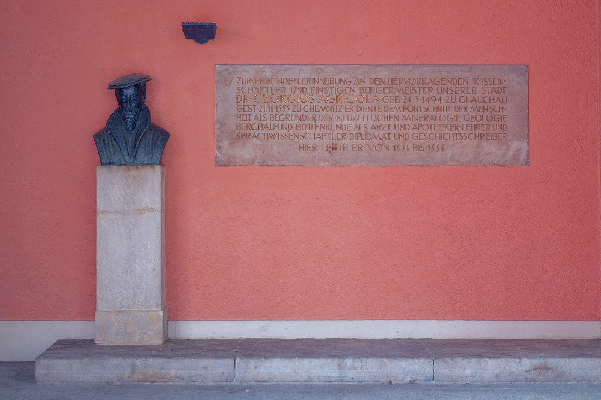
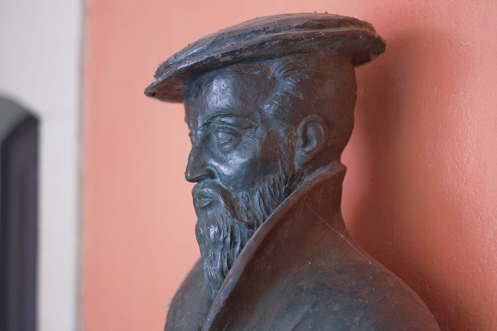
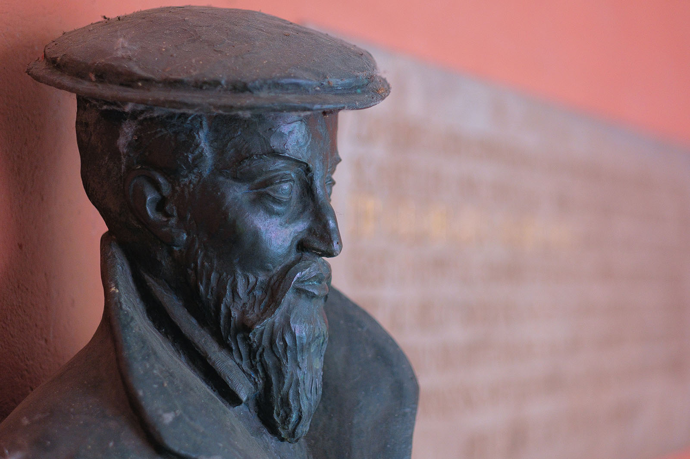
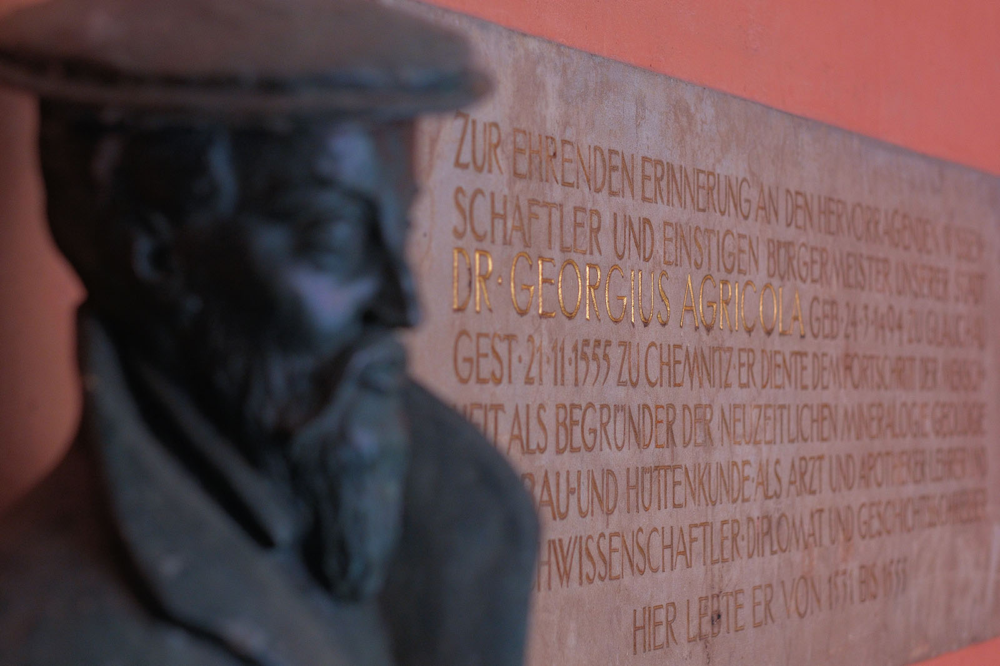
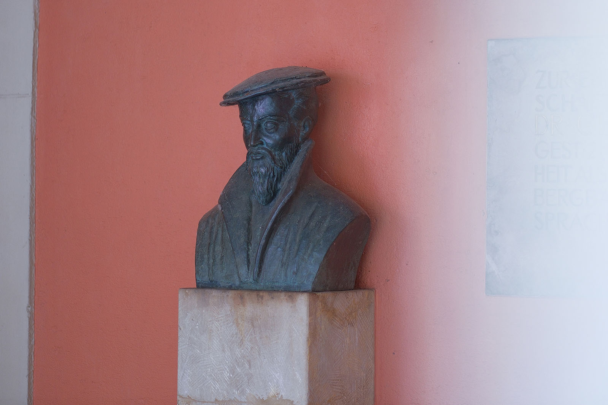

Recherche und Werkbeschreibung: Roman Pilz. Fotografien: Frank Krüger. Text und Bild wechseln sich wie in einem Magazin ab. Ein Klick auf ein Bild öffnet die Großansicht.
Der Gelehrte und Humanist Georgius Agricola gilt als einer der berühmtesten Bürger der Stadt Chemnitz. Gebürtig aus Glauchau studierte er in Leipzig und Italien, wirkte in Zwickau und Sankt Joachimsthal und ließ sich 1531 in der damals 4.500 Einwohner zählenden Stadt Chemnitz nieder. Bereits in den 1540er Jahren machten ihn seine vielfältigen naturwissenschaftlichen Forschungen international bekannt.
Johannes Friedrich Rogge wurde 1898 in Berlin geboren und verstarb 1983 in Dresden. Rogge studierte zwischen 1916 und 1925 in Berlin und Jena wo er im Fach Kunstphilosophie promovierte. Ab 1922 widmet er sich zunächst der Malerei und arbeitet in der zweiten Hälfte der 1920er Jahre als Plastiker im Atelier des Bildhauers Paul Türpe (1859-1944) in Berlin.
Ab 1930 stellt er sein bildhauerisches Werk regelmäßig aus und spezialisiert sich vor allem auf Büsten und Denkmale. Er porträtierte wichtige Persönlichkeiten des Dritten Reiches und später der DDR. Nach der Zerstörung seines Berliner Ateliers im Krieg lebte und arbeitete er ab 1946 bei Dresden.
1949 entstand eine Puschkin-Büste für Weimar, der zahlreiche Aufträge für Büsten und Denkmäler folgten, darunter 1951 das erste Lenin-Denkmal in der DDR in Königsee. Er war Mitglied des Verbands Bildender Künstler der DDR und arbeitete neben der Kunst auch auf dem Gebiet der Literatur.
Agricola gilt als Mitbegründer der modernen Mineralogie und der Montanwissenschaften. Als typischer Renaissance-Gelehrter beschäftigte er sich jedoch mit universellem Anspruch auf den Gebieten des Berg- und Hüttenwesens, der Medizin, Pharmazie, Pädagogik, Meteorologie, Politik, Wirtschaft und Technik und natürlich interessierte er sich auch für Kunst und Kultur. Als Chemnitzer Bürger war er bis zu seinem Tod als Stadtarzt und Bürgermeister tätig.
Das Wohnhaus Acricolas stand entsprechend seiner Prominenz auch an erster Adresse, direkt am Chemnitzer Markt, neben dem Siegertschen Haus. Im Zweiten Weltkrieg wurde das Haus zerstört. 1954 bis 1955 wurde auf dem ehemaligen Grundstück des Hauses vom Chemnitzer Architekten Roland Hühnerfürst ein Neubau im traditionalistischen Stil errichtet. Pünktlich zum in der ganzen DDR gefeierten Agricola-Jahr 1955, an dem sich sein 400. Todestag jährte, wurde das Haus fertiggestellt.

Im überdachten Eingangsbereich, unter historisch anmutenden Arkadengängen, wurde im Andenken auch die bronzene Porträtbüste mit ihrer begleitenden Wandinschrift angebracht. Im Gebäude wurden ebenfalls die Agricola-Buchhandlung und die Verkaufsgenossenschaft bildender Künstler der DDR untergebracht.

Mit der Ausführung der Plastik wurde der Dresdner Bildhauer Johannes Friedrich Rogge beauftragt. Dieser orientierte sich mit seinem Abbild an einer Porträtzeichnung aus einem weit verbreiteten, historischen Stich. Der Humanist erscheint frontal in mittleren Jahren mit spitzem Kinnbart, aufgestellten Kragen und Barett. Der Ausdruck des Mannes ist würdevoll und der Blick geht leicht nach rechts, wie in die Ferne.

Die Bronze wurde höchstwahrscheinlich in der Kunstgießerei Lauchhammer hergestellt. In der traditionsreichen Gießerei war mit Rogges Stalin-Denkmal aus dem Jahr 1954 erstmals nach dem Krieg wieder die Produktion künstlerischer Standbilder aufgenommen worden.

Der Weg ins Unbekannte
Die Bronzebüste „Dr. Georgius Agricola“ (1955) von Johannes Friedrich Rogge an der Inneren Klosterstraße 1
